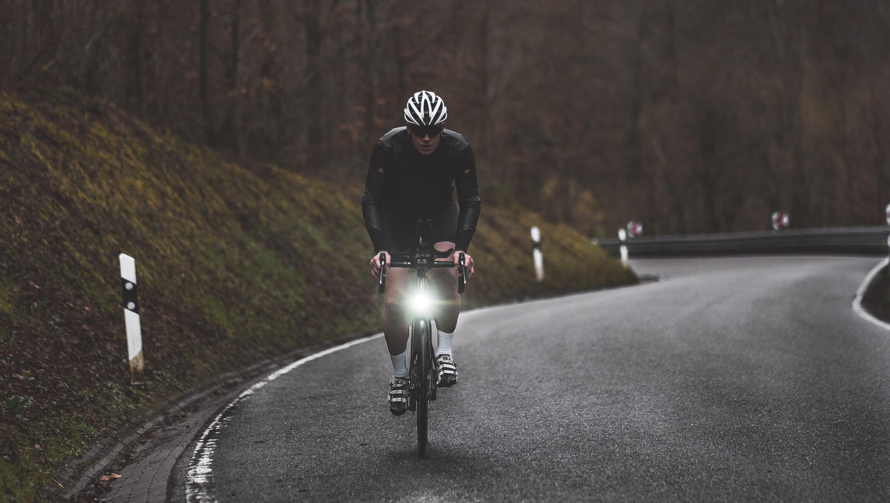

Portfolio - Graduaat Programmeren
Hallo, ik ben Jarno
Ik ben student aan Thomas More in Geel en ik volg de graduaat programmeren. Op deze website vind je informatie over mij, van mijn CV tot mijn hobby's. Neem gerust een kijkje bij mijn projecten om te zien waar ik mee bezig ben geweest.
Neem Contact op
Benieuwd naar wat ik doe in mijn vrije tijd? Ontdek hier mijn passies, favoriete activiteiten en waar ik mijn creativiteit en energie in kwijt kan.